来源：https://vow6kdbiak.feishu.cn/docx/QLRvdmFYnoeJqwxXkAXcBOXZnHd
内容由阿甜独立完成，希望大家看得开心！能帮到你最好啦！
小红书官方到义乌线下来找商家入局，所以肯定是讲干货表真心！
我把出现的ppt都拍了，文字内容是ppt的扩展+我入局小红书四年的理解！
开场是小红书宣传视频，内容都是小红书一些日常、爆款、温暖、有趣的笔记！
小红书的生态丰富多彩又充满希望！有点像几年前B站的《后浪》，反正挺燃的！
这一场是专门针对义乌商家的沙龙宣讲和培训
简单来说，就是我们小红书正在成长、希望大大的有！义乌商家多，电商多、供应链多！别去和抖音拼多多卷了，来我们小红书吧！
我们小红书给你们流量！给你们矩阵！给你们开白名单！给你们培训！给你们用 AI 生成！
因为小红书搜索的用户、种草用户、高级用户多！但是小红书现在产品跟不上了！商家不够多啊！
相当于什么！官方扶持！
所以这也是我学习的一次大机会！
第一想看小红书官方的人员精气神如何，对标看自己状态，因为来的都是负责人！
也想看看和他们比，我的差距在哪里，如果我去小红书找工作，够不够。
我的打工人的根从深圳带到上海，又带到义乌！就是想对比一下！
再一个就是看小红书有什么新方向是我们之前做C端不知道的，因为平台要依托B端商家产品承接，讲的都是真话！因为B端的产品决定了小红书平台是否能赚钱！
赚钱了才能拿到更多商业机会和投资、出圈！走海外！
去海外一直是他们的野心，也是他们的创业起步！这个他们在会上也提到了！
而且小红书是我们目前玩的平台里面没有“墙”的！
B站外国玩YT；抖音外国玩TK；虽然ins和小红书有点像，但是小红书搜索、图文、干货、攻略会更胜一筹！
所以对我们比较友好的方式就是和平台一起成长！而不是像现在的抖音，卷得爹妈不认！
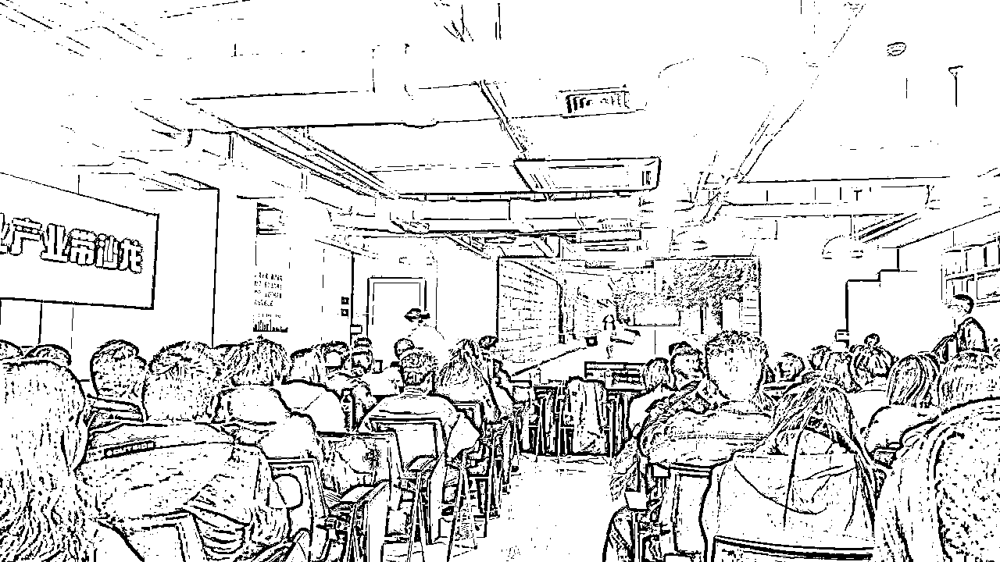
小红书家居+日用百货，这个赛道是家庭必备用品，并且有强复购的产品类型，也是义乌比较出彩的产品。
他们官方肯定是综合了多种数据得到的结果，要不然怎么会专门到义乌来！他们说这是第一次义乌线下！
可见，他们对义乌的希望抱了多高！
这个部分讲小红书的生态，因为很多老板在抖音起家，对新平台还是水土不服！
听很多老板说招了小红书运营但是没太大起色，也就没有像抖音的24h直播、店播、达播了！
也正是这样，小红书才有更大机会！像抖音现在都有了，狗来了他都不看一眼！
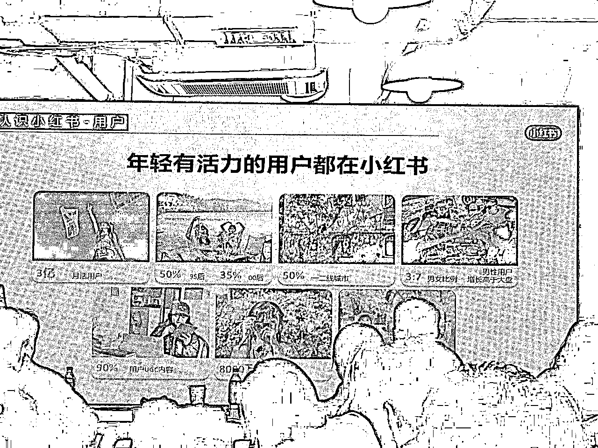
这里是他们一直强调的内容！就是说人话、干人事！
在小红书的人喜欢什么内容，你就做让他们喜欢的内容！
但是这个也是做分类的，你不能什么都要！既要又要还要！想peach！
对我们来说就是找到目标用户，打痛点！找需求！提出解决方案！搞定内容！搞定成交！
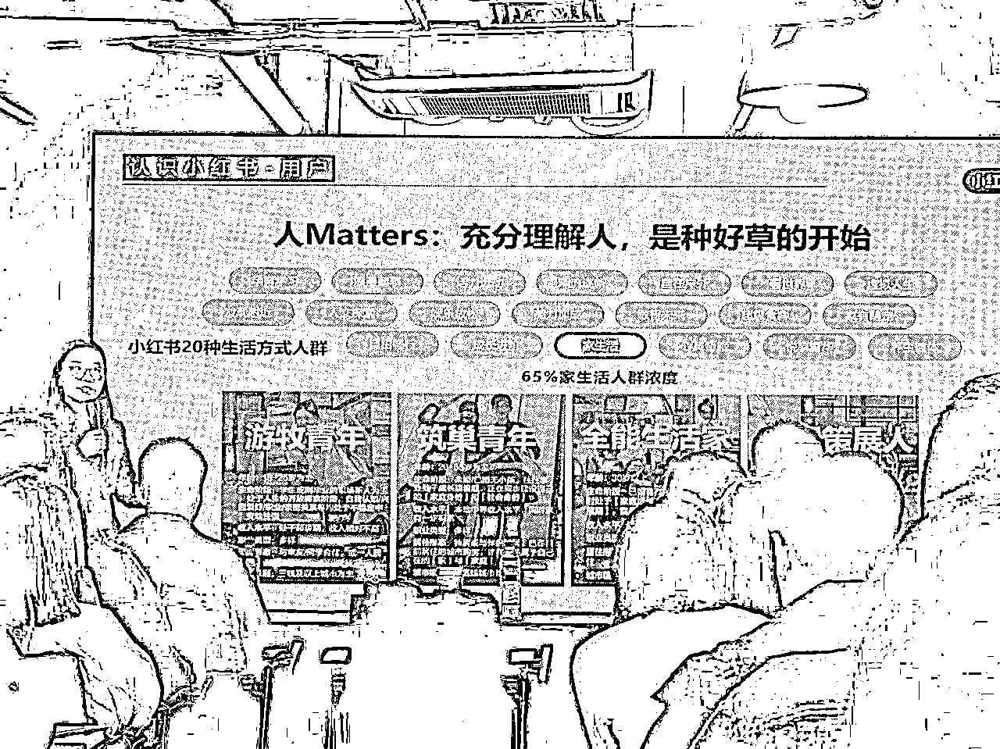
在小红书玩的时候就知道我们一般的操作行为
浏览（随意看，首页推的）、搜索（关键词是你需要的）、挑选（选择喜欢的帖子、内容、看反馈）、
影响决策（买什么、是否要买、买什么品牌）
这里就有个问题！这也是小红书这么着急让商家下场的原因！
用户被种草了，跑到淘宝拼多多去了！这也是为什么小红书疯狂扩张电商的原因！
0元0粉无货源，你都可以玩！但是你要把我的客户留下来！于是有了小红书闭环！
让他们在小红书被种草，接着在我的小红书下单！留住我的客户！
KFS种草，Kol、Feeds 推荐、Search 搜索
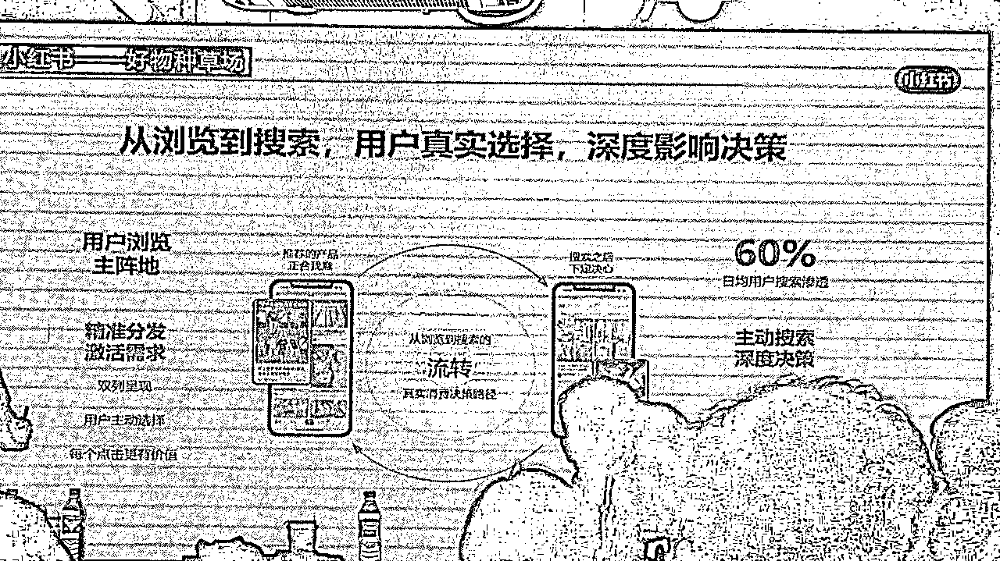
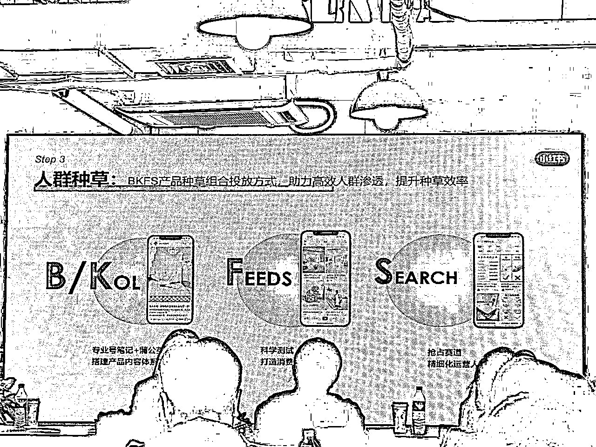
小红书的后台数据，看用户是如何被种草！如何下单的！
这也是小红书反推给商家，应该如何做内容的其中一部分

这个案例是给商家信息，告诉他们小红书是如何策划出这个品牌在小红书的种草！
他们跑通了链路闭环，成功一个就有能复制的信息和实力了！
毕竟流量在小红书手里！
他们的小二也会给你白名单、也会给你做出封面、标题关键词的设置！
让你在SEO搜索中占优势！只要你有我小红书有的货品，我们互利共赢！
这里面的内容都是细节！告诉我们他们小红书是如何做的！
①初步品类搜索，看用户的关键词选择，再从用户选择的动作行为知道进一步优化的细节！
②确定笔记方向，结合用户喜欢的点生产笔记，投其所好！
③搜索SEO，占据搜索位优势+投放瀑布流增加曝光

小红书搜索的购买需求用户量大！是有可能转化成交的用户！
关键词布局多，搜索+内容呈现天然拔草场！

知道小红书的核心动作，反推我们能做的内容！
笔记+买手+直播！我们看现在抖音的呈现就知道小红书平台的东西！
UGC是内容；买手是挂车精选联盟！直播就是给用户的强心针，及时触达+成交临门一脚！
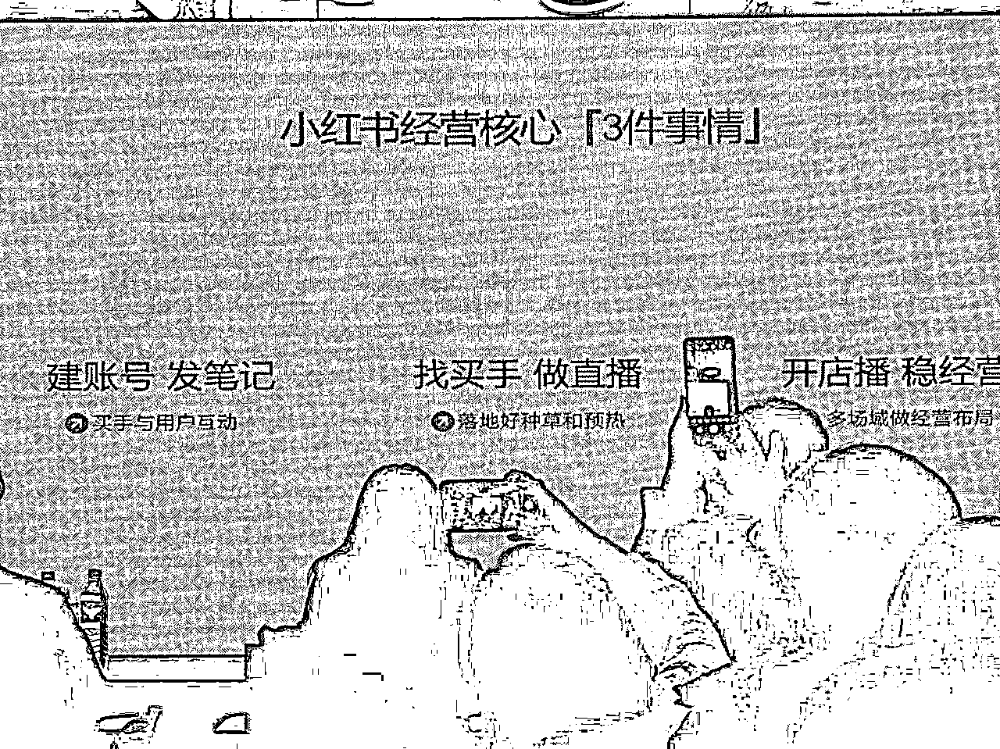
小红书是搜索 SEO 为主，大家都说之前找百度，现在直接是小红书！
小红书从大家的搜索词就能得出最近大家关心什么喜欢什么！都给你说了喜欢什么，你提供出来就ok！
看笔记，我有内容！你去看！
要产品，我有电商！你去买！
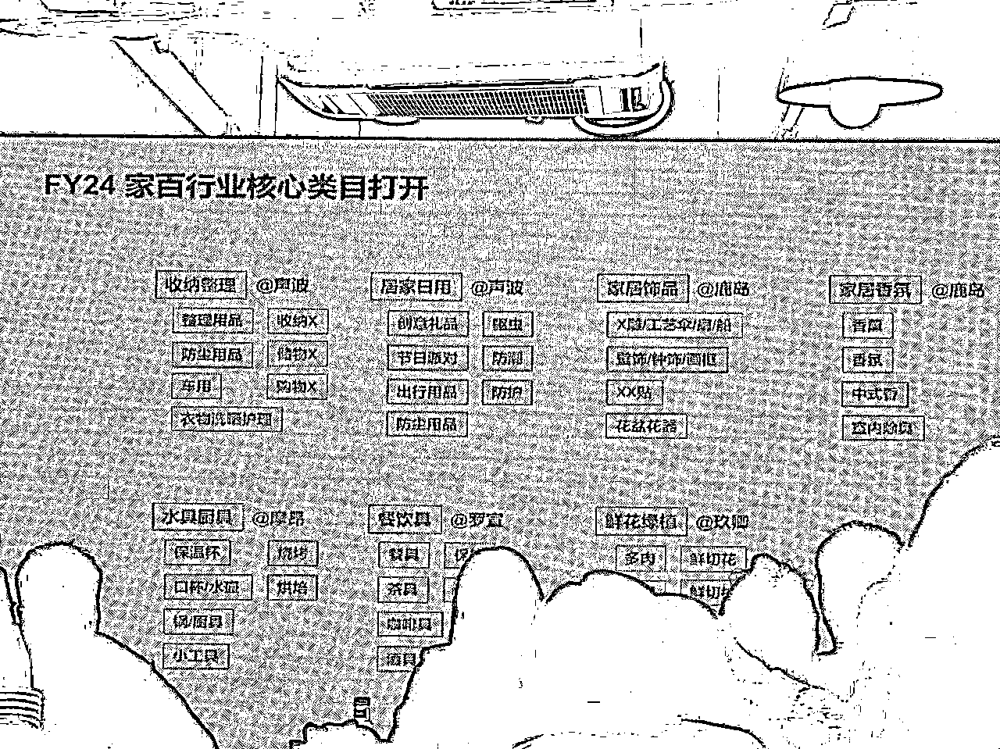
这个矩阵，义乌商家玩得飞起！拼多多店群、抖店都是这样玩！还有一些大户都是矩阵跑！
搜索一个关键词，出来了我家一条帖子是吧！我弄10个、100个！光数量就占领你的关键词，是不是更有可能会触达成交！就是这个道理！
而且一个账号噶了没关系，还有几十个！不行再开几十个！打法就是这么玩！

这个和抖音是差不多的！分为店+达人合作
你的店铺要挂车，要卖东西！自己的力量不大！没关系，我找达人给我带货，是不是人就多了？
这就是我销售团队啊！店家相当于龙头，后面的销售是跟随者！
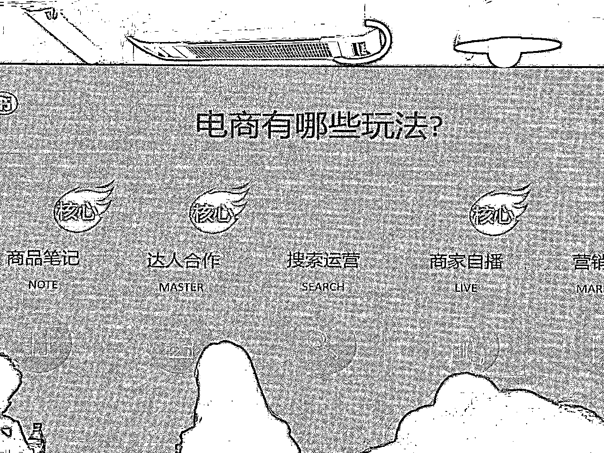
这里有意思！我们都知道AI模型是因为投喂的文案或者图片，比如 GPTs 小红书文案专家之类也是给他投喂小红书优秀案例，并告诉他什么是好的案例！
但是小红书自己就是纯天然的投喂场地，所以小红书自己出了一个AI，他们是最知道小红书内容和用户的！这对我们来说又是一大波趋势！
不会做笔记是吧，小红书AI帮你做！小红书需要的是笔记！
当然，这其实也有个大问题，AI生成的内容铺天盖地又简单，那以后大家看到的内容，真实性大大降低
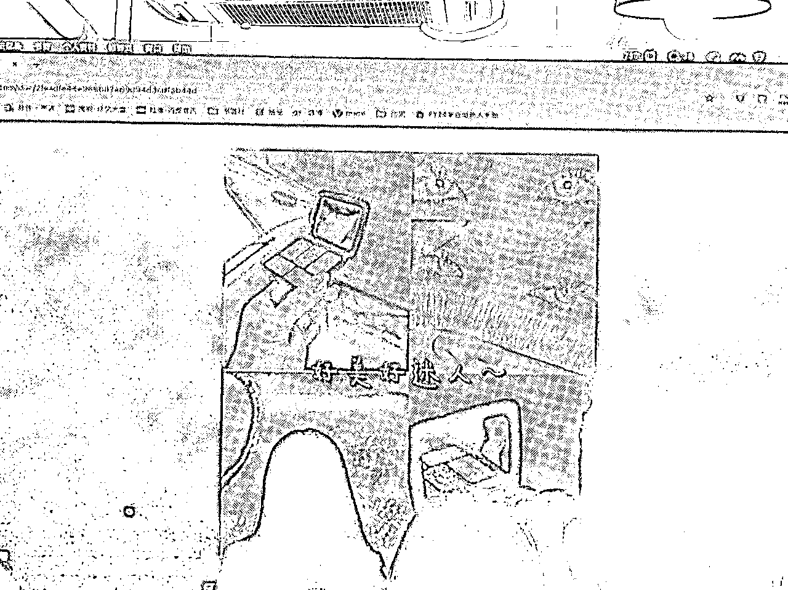
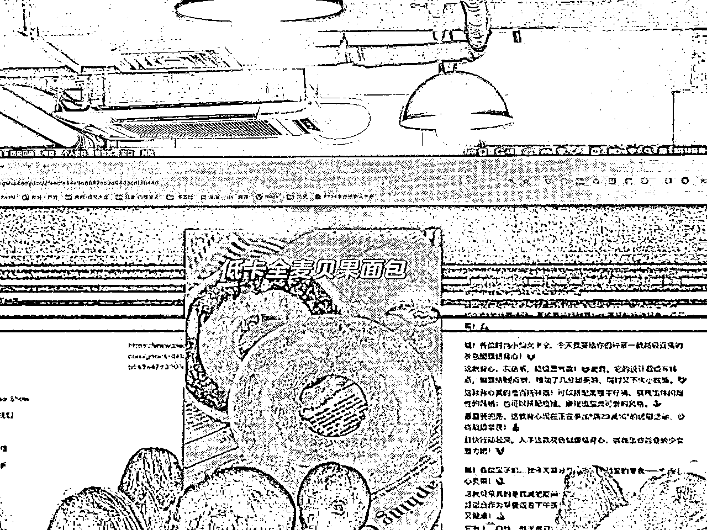
我们能看到的只是小红书的笔记，但是小红书笔记分类还是很多的
粉丝晒单（消费者的笔记，相当于买家秀，但是是以笔记显示的，有笔记有种草有商品，天然池子）
这个后期说不定直接就是“淘宝客”的玩法，直接挂了有人买，晒单的人就有提成
商单（投蒲公英的报备笔记）
带货笔记（买手挂车，千粉后台可直接挂车）
店铺挂车（开薯店的挂商品）
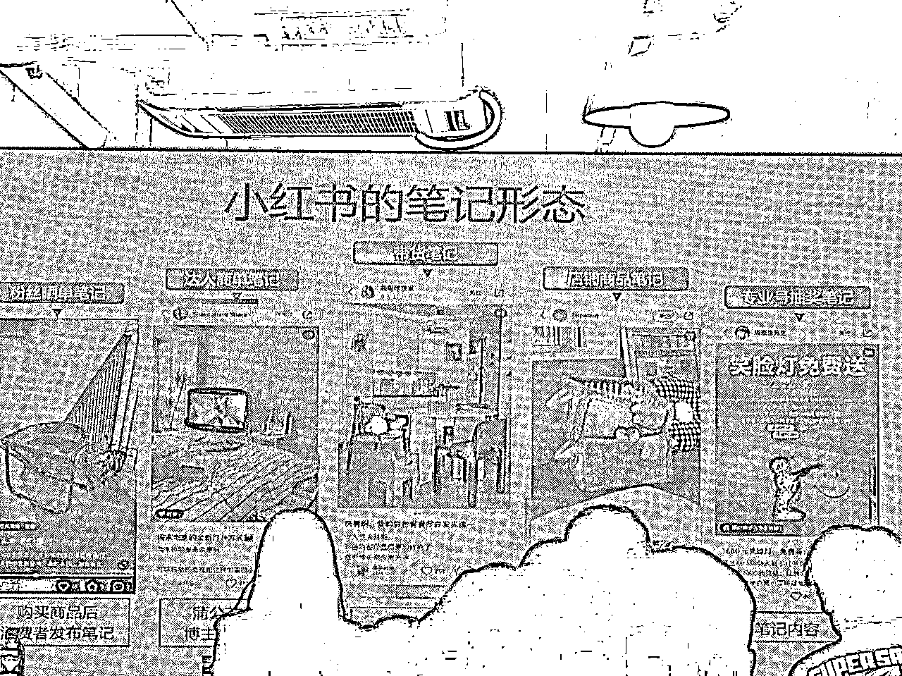
账号在不同阶段有不同的运营策略，官方给的肯定更加精细和准确！
分为活动、商品、种草三种状态不同的笔记！等于说是不能太硬广，要点种草感，但是又要有商单和活动
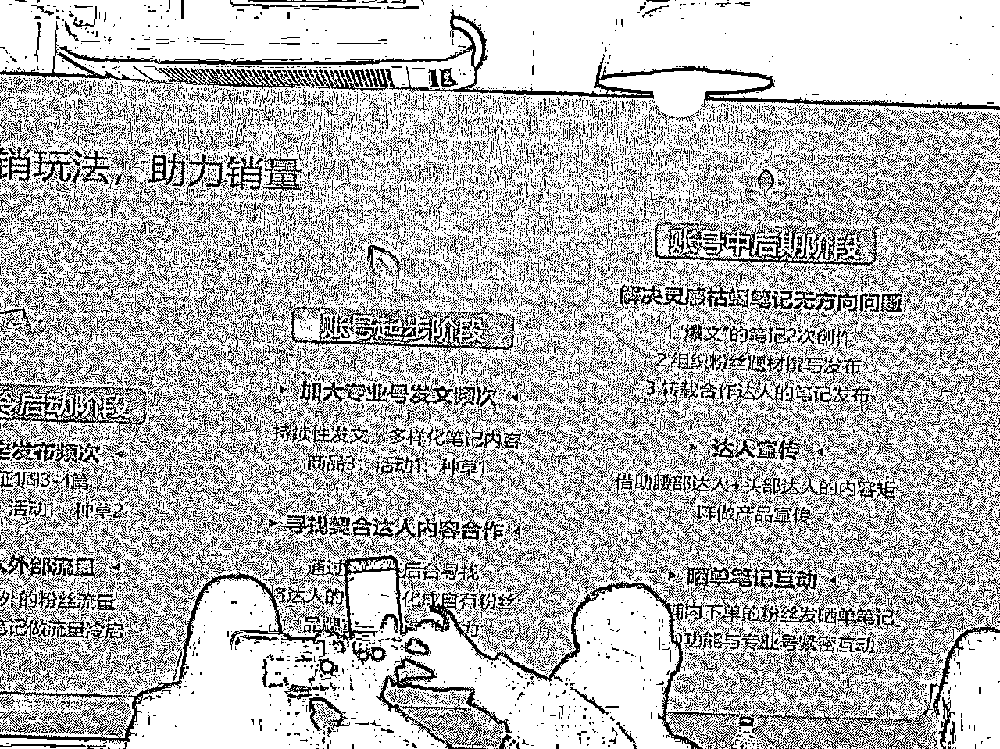
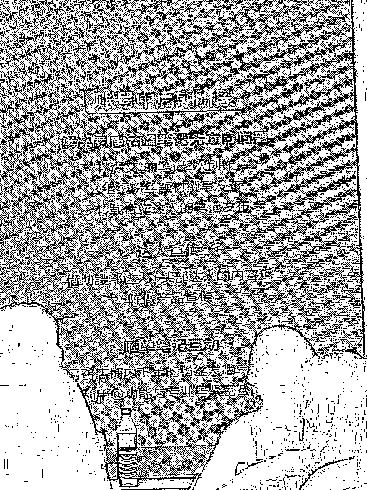
这个话题是小红书的基础内容，人设、封面、笔记本身、赞藏和评论
笔记内容风格要一致，对IP来说就是要用户喜欢上你这个人设，你的IP，从而转粉变现
而且这个人设的封面、内容都和品牌相吻合！是高级感、日常风格、多巴胺还是什么呢？
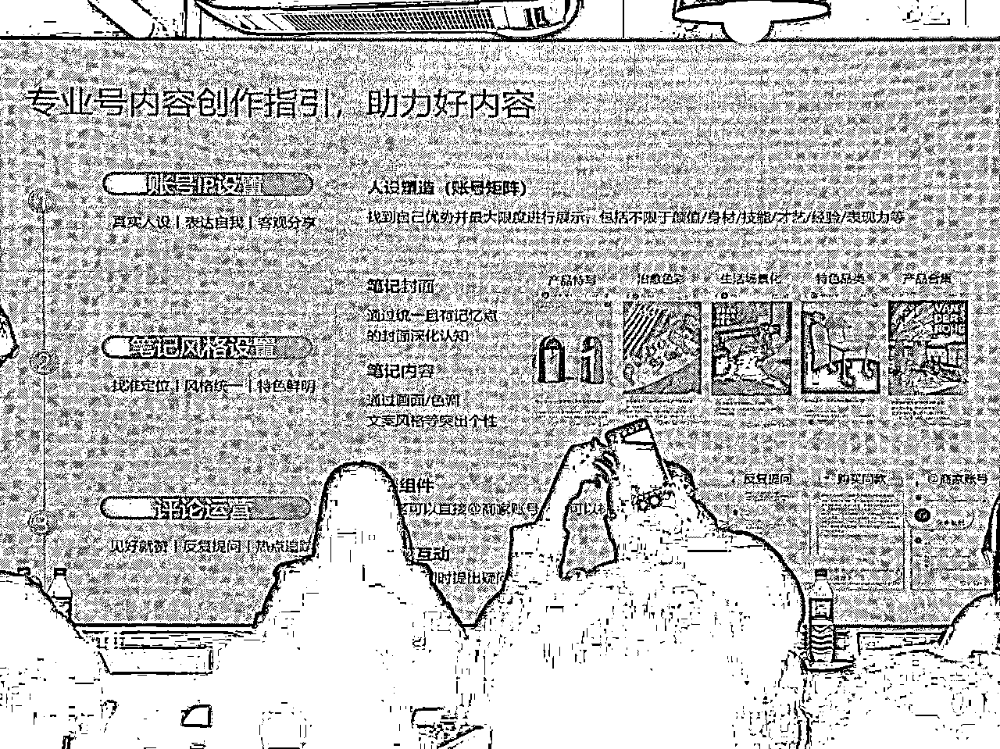
这个是官方拆出来的内容！他们总结得更到位！
开头语、标题、话题拆解！
用户好奇、营销暗示、提问开头、生活带入、产品卖点、感叹效果、热点话题、人群痛点
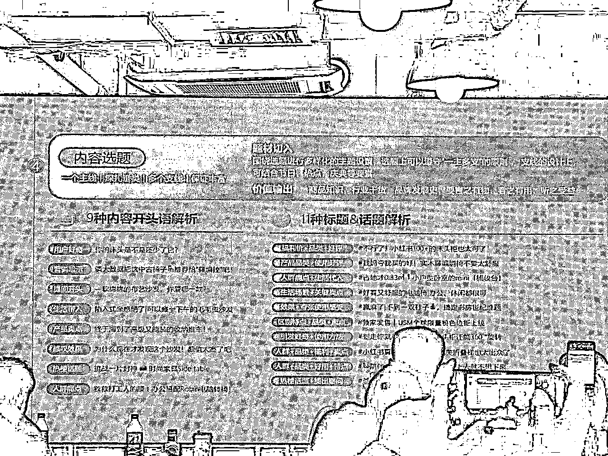
在沙龙明说的就是之前店群的方法让商家玩，铺货！
和我们做账号是一样，搜索到一个的概率肯定小于100个！
义乌商家还是很狠的，我们在群里填写了一个表格，看到大家的店铺数量，有一百个的！
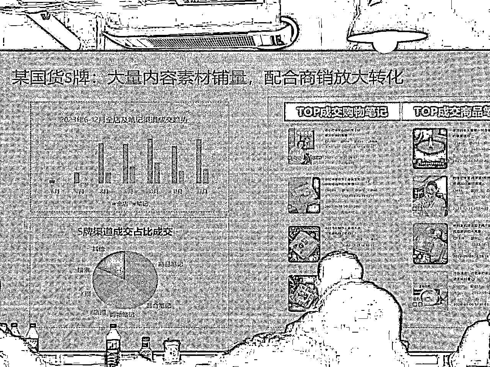
前面说到小红书直播也是一个重头戏！只要你开我就给你流量！店播和达播都可！
所以对小红书的直播运营来说也很重要，但是如果之前是玩抖音那套的，在小红书也可
只是321那种少来，以人为中心，设身处地为粉丝着想，他们会爱死你的！
但是这里要注意，直播的底层推流逻辑是：能留住人，能转化他们！
所以我们做的直播运营的一切动作，都是想留人；做的一切减免活动，都是为了卖出去 ！
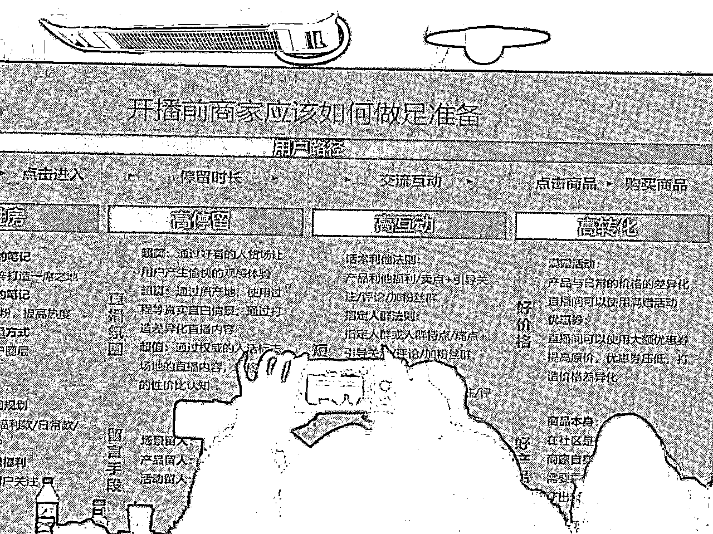
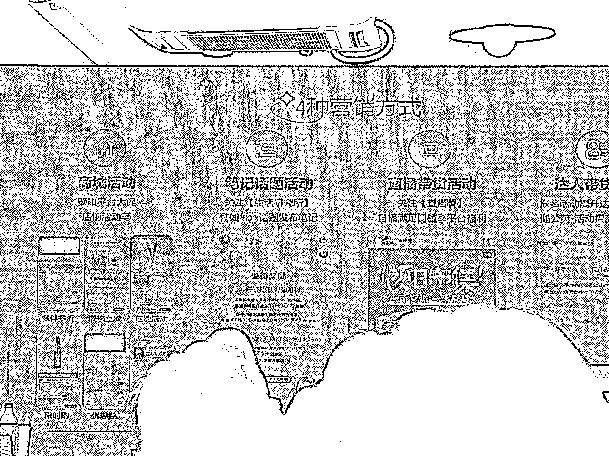
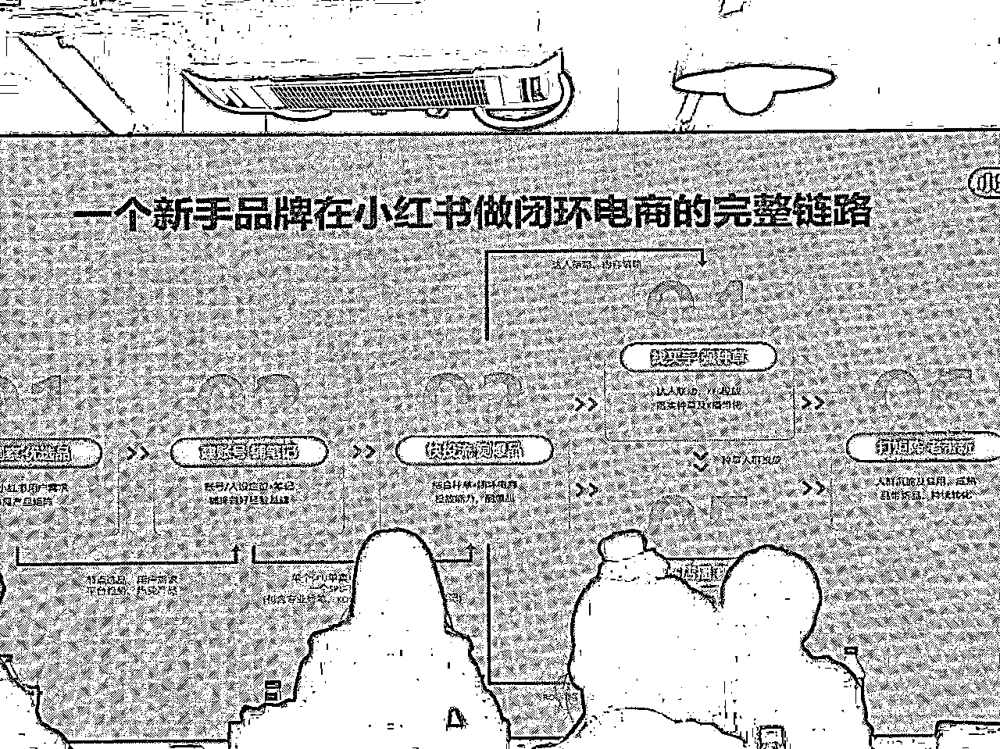